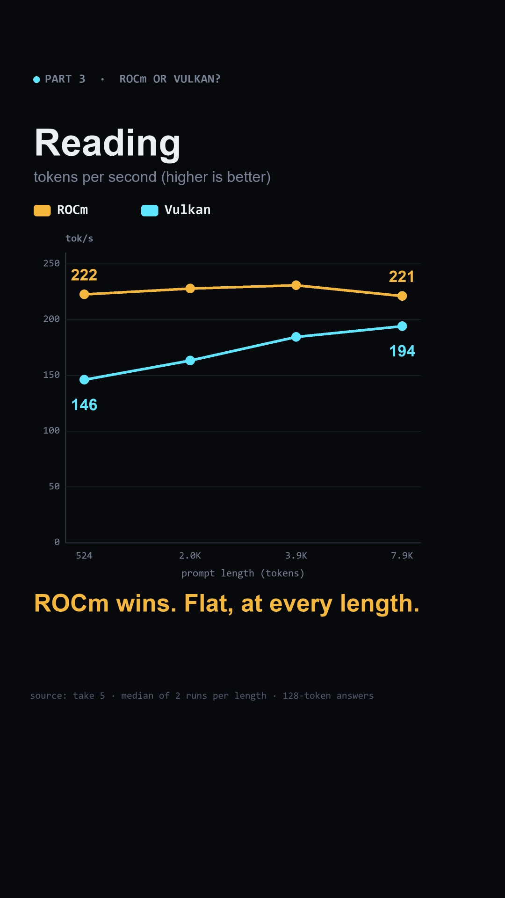
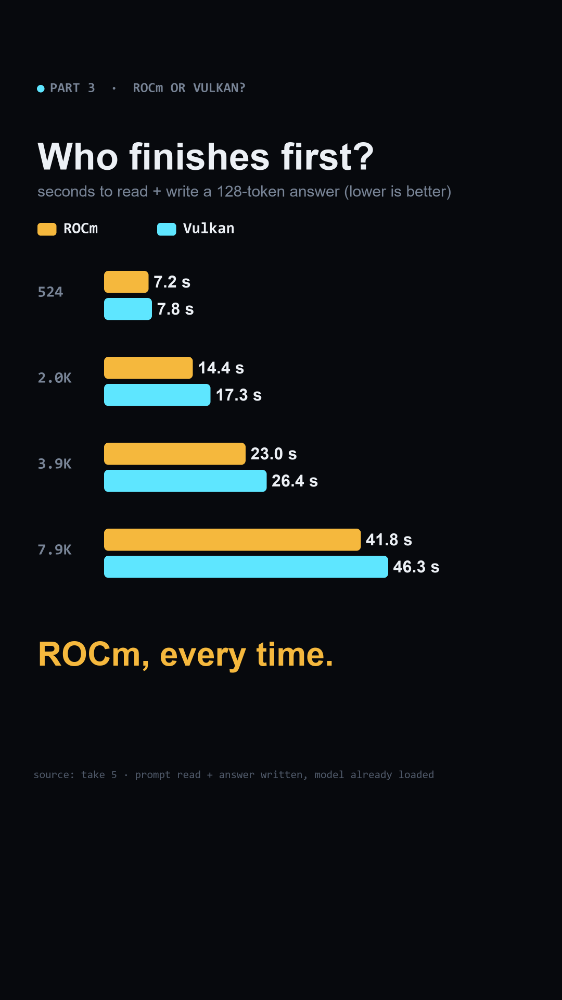

Parts 2 + 3 · measured 2026-10-28
My mini PC said a 12B model didn't fit. ROCm could only see 7.6 GiB of a machine with 16 GB set aside for graphics. One kernel boot setting fixed it - and then I timed both backends.
Part 2 · the symptom
In September, Ollama refused to start a 12B model on this machine:
ggml_gallocr_reserve_n_impl: failed to allocate ROCm0 buffer of size 132137216
That is 126 MiB, on a 32 GB machine. The fix at the time was to switch Ollama to Vulkan. This page is about why it happened, and how to fix ROCm itself.
Part 2 · two pools
The firmware sets aside 16.0 GiB as video memory. Linux adds a shared pool (GTT) the graphics driver can map on demand: 7.6 GiB by default. On this machine:
| backend | what Ollama's startup log reports | which pools |
|---|---|---|
| Vulkan | total "23.6 GiB" | video memory + shared |
| ROCm | total "7.6 GiB" | the shared pool only (equals it on both boots I measured) |
Why 7.6? Linux sizes the shared pool (the ttm.pages_limit kernel setting) at half the
RAM left after the video memory: 15,604 MiB ÷ 2 = 7,802 MiB. Here
pages_limit was 1,997,339 pages × 4 KiB = 7,802 MiB. A live change of that
setting does nothing - the pool is sized when the driver loads - so the fix is a boot parameter.
Part 2 · the fix
I raised the shared pool to 12 GiB: pages = GiB × 262,144 (4 KiB pages) → 3,145,728.
GRUB_CMDLINE_LINUX_DEFAULT="... ttm.pages_limit=3145728 ttm.page_pool_size=3145728"sudo update-grub && sudo rebootAfter the reboot the shared pool was 12.0 GiB; ROCm reported 12 GiB and Vulkan 28. The 12B loaded on ROCm with 49/49 layers on the GPU.
Leave room for the system. This box has no swap; the shared pool is a ceiling, not a reservation, but anything that trusts the bigger number can now ask for more RAM than exists. I keep one big model loaded at a time.
Or skip all of it: Vulkan already sees both pools, no reboot. In Ollama it is one line (a systemd drop-in here):
Environment="OLLAMA_LLM_LIBRARY=vulkan"To see what your own backend can use, read Ollama's startup log:
journalctl -u ollama | grep "inference compute"Part 3 · the race
gemma4:12b, temperature 0, seed 1, 128-token answer, num_ctx 16384, 2 runs per length after a warm-up, nothing else loaded; boot with the shared pool raised to 12 GiB. Speeds in tokens/s, median of 2 (runs within 0.1 tok/s on Vulkan, 5 on ROCm). "Total" is the time to read the prompt plus write the 128-token answer, model already loaded.
| prompt | read ROCm | read Vulkan | write ROCm | write Vulkan | total ROCm | total Vulkan | Vulkan first past |
|---|---|---|---|---|---|---|---|
| 524 | 222.5 | 146.0 | 10.52 | 11.23 | 7.2 s | 7.8 s | ~204 |
| 2,000 | 227.9 | 163.2 | 10.01 | 10.80 | 14.4 s | 17.3 s | ~476 |
| 3,927 | 230.7 | 184.5 | 9.86 | 10.75 | 23.0 s | 26.4 s | ~502 |
| 7,904 | 221.1 | 194.1 | 9.71 | 10.64 | 41.8 s | 46.3 s | ~554 |
Reading a prompt is compute-bound - ROCm stays flat around 226 tok/s while Vulkan climbs with length. Writing is bandwidth-bound - every token reads the whole 7 GB model from RAM, and on this chip Vulkan runs close to the memory's limit. The last column is computed, not measured: the answer length (tokens) past which Vulkan's faster writing wins back the time ROCm saved reading.


The rule on this machine: agents (big context, short replies) → ROCm. Long chat answers → Vulkan, which also needs no reboot. One model, one machine - test yours.
Short-prompt check, 256-token answers, 3 runs each: ROCm 10.62 · Vulkan 11.32 · Vulkan on the default boot 11.30 tok/s - the boot setting does not change Vulkan.
Open questions
Vulkan put the model in the video memory; ROCm can only use the shared pool. So I forced Vulkan into host memory
(GGML_VK_PREFER_HOST_MEMORY=1) with a ~3.9K-token prompt:
| arm | read tok/s | write tok/s |
|---|---|---|
| A ROCm | 218.6 | 9.83 |
| B Vulkan | 184.3 | 10.73 |
| D Vulkan + host memory | 165.3 | 10.51 |
Tell me in the comments of the post, or open an issue on the repo.
The data
mini PC, AMD Radeon 890M integrated graphics (RADV GFX1150), 32 GB RAM with 16 GB set aside as video memory, no swap; Linux kernel 6.12; Ollama 0.30.10; model gemma4:12b (Q4). Derived from the take logs (which carry local addresses, so they are not published as-is):